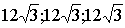

2. ЭЛЕМЕНТЫ ВЕКТОРНОЙ АЛГЕБРЫ
ЗАНЯТИЕ 2.1. ПОНЯТИЕ ВЕКТОРА. ПРОЕКЦИИ ВЕКТОРА
Контрольные вопросы
- Дайте определение вектора.
- Какие векторы являются коллинеарными, а какие - компланарными?
- Какие векторы считаются равными?
- Дайте определение оси.
- Как найти проекцию вектора на ось?
- Что такое линейная комбинация системы векторов?
- Линейно-зависимые и линейно-независимые системы векторов.
- Что такое базис, ортогональный базис, ортонормированный базис?
- Что такое разложение вектора по заданному базису? Какой смысл имеют коэффициенты в разложении вектора по ортонормированному базису?
- Как вычислить модуль вектора, заданного координатами в ортонормирован-ном базисе?
- Как связаны между собой косинусы направляющих углов вектора?
Задачи
- Даны две точки А(1,4,-2) и В(6,-2,1). Найти координаты векторов
и
 .
Вычислить их длины.
.
Вычислить их длины.
- Определить координаты начала (конца) вектора {5,12,-6}, если его конец (начало) совпадает с точкой (2,17,8).
- Вычислить длину и направляющие косинусы вектора {12,-15,-16}.
- Длина вектора равна 6. Найти координаты вектора, если
,
,
.
- Может ли вектор составлять с координатными осями углы:
а) ;
б) ;
в) ;
г) ?
- Может ли вектор составлять с двумя координатными осями следующие углы
а)
б) ,
в) ?
- Вектор составляет с осями Ох и Оz углы и
. Какой угол он составляет
с осью Оу?
- Определить координаты конца вектора, если начало его расположено в начале координат,
длина его равна 12, при этом
.
- Вектор составляет с координатными осями Ох и Оу углы
.
Вычислить его координаты при условии, что длина его равна 2.
Ответы
- = {5;-6;3},
= {-5;6;-3},
/ / =
/ / =
.
- Координаты начала (-3,5,14), конца (7,29,2).
- Длина = 25, .
- .
- а) не может, б) может, в) может, г) не может.
- а) не может, б) может, в) не может.
- или
.
- ( ) или
( ).
- или
.